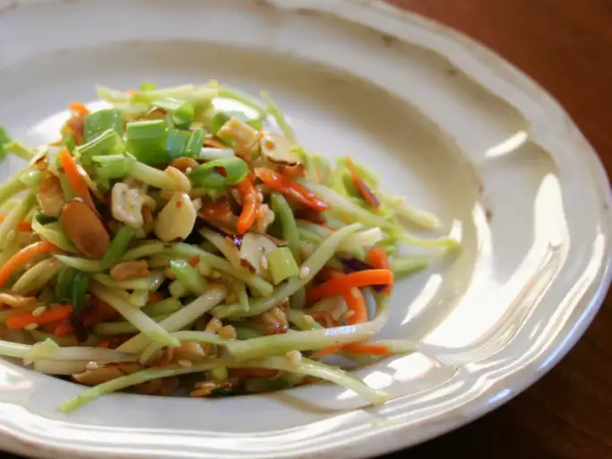

Crunchy Ramen

Description
This broccoli slaw recipe was passed around for years in my grandmother's beauty salon. She took it to every church supper. It was on the table every Thanksgiving and Christmas.
Ingredients
- ¼ cup butter
- 2 (3 ounce) packages Oriental-flavor ramen noodle soup, seasoning packet reserved
- ½ cup slivered almonds
- ¼ cup sesame seeds
- 1 (16 ounce) package broccoli coleslaw mix
- ½ cup chopped green onion
Steps
- Preheat the oven to 350 degrees F (175 degrees C).
- Melt butter in a microwave-safe bowl in the microwave.
- Bake in the preheated oven until golden brown and crunchy, 8 to 10 minutes; allow to cool completely.